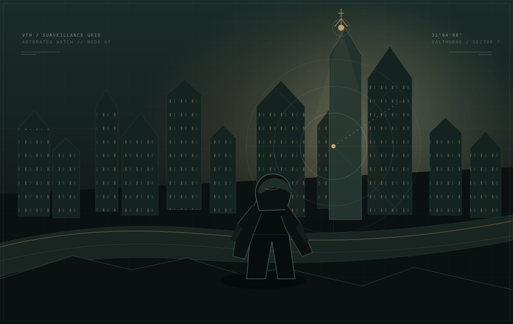

FIELD NOTES
SIGNAL INTEGRITY: UNSTABLE
VALTHORNE CITY AUTHORITY // ARCHIVE 2094
ZONE 07 / UPLINK COMPROMISED
DEAD
FREQUENCY
THE CITY HEARS EVERYTHING.
MAKE IT HEAR THE WRONG THING.
In a city ruled by its own surveillance network, sound is your weapon. Forge a false trail, turn the patrol, and steal back the memories they buried.
03 OPERATIONS 05 POSSIBLE ENDINGS
OPERATIVE // GHOSTNO SIGNAL IS SAFE

QUIET-NET // PUBLIC SURVEILLANCE FEED LIVE
CAM 07-B · 31.04.88
VALTHORNETHE CITY NEVER LOOKS AWAY.
BUILD 0.2.0 // SECURITY NETWORK OVERHAULVALTHORNE METROPOLITAN ZONE · 2094DESIGNED TO BE HEARD, NOT SEEN
OPERATIVE FILE // GHOST
WANTED // 5,000 CR
KAEL VEYRIN
THE ASHEN FOX
Framed by his mentor, Ghost is stealing the memories that can clear his name.
CALLSIGNGHOST
AGE27
ORIGINASH QUARTER // VALTHORNE
ROLESIGNAL INFILTRATOR
FULL DOSSIER // BACKGROUND & CONNECTIONS
KNOWN CONNECTIONS
PEOPLE IN HIS WAKE
OPTIONAL CONTRACT // VALTHORNE FRINGE
UNREGISTERED SALVAGE ZONE · ROOK TERRITORY
DUST &
STATIC.
Three Glassite cores. Two hostile groups. Get in, get out.
PRIMARY OBJECTIVE // REQUIRED
HARVEST THE GLASSITE
Hold F at three seams. Stay still while cutting.
OPTIONAL OBJECTIVE // BONUS
STEAL THE ROOK SURVEY LEDGER
Optional: hold F at the Rook cache for bonus intel.
THREATS // ADAPT
DUNE STALKERS + ROOK SCAVENGERS
Stalkers hear vibration. Rooks guard the cache. E draws them away.
EXTRACTION REWARDS // CHOOSE IN THE FIELD
SIGNAL LENS+1 jammer each mission.
ECHO SPOOL+1 decoy each mission.
PRIVATE PAYOUT+650 points.
ROOK TRUCEAllied Rooks on a replay.
Rook ledger: +350 points and a final-mission charge.
VALTHORNE // CIVIC POWER REGISTER
WHO HOLDS
THE LINES?
The city’s political balance is still being calculated.
POWER BLOCS // INFLUENCE
INFLUENCE IS NOT THE SAME AS LEGITIMACY.DIPLOMACY // TREATIES & RIVALRIES
RELATIONSHIPS SHIFT WITH YOUR DECISIONS.ALLIANCE ≥ +45PRAGMATIC −11 TO +44FRICTION −12 TO −34RIVALRY ≤ −35
RECENT DEVELOPMENTS // POLITICAL MEMORY
FIELD MANUAL // QUICK START
FIVE KEYS.
ONE GHOST.
MOVE
SHIFT sprint · C crouch
FALSE ECHO
Throw a signal where Ghost faces.
JAM
Blind cameras for a short time.
INTERACT
Hold still to hack, harvest or extract.
PAUSE
Pause and release the mouse.
READ THE SIGNAL
Cyan safe · amber suspicion · red detected.
ADVANCED TIPS // OPTIONAL
Decoys: Watch for the cyan ECHO tag. Guards remember repeated throw locations. Successful diversions build resonance and can refund a charge.
Hacking: Disable every relay before the memory terminal. Hacks broadcast your position—use cover, decoys and the jammer.
Lockdown: Break line of sight, then use E or Q during the final 3.2-second window.
Your choices matter: Mission decisions and stealth habits shift faction influence, patrol pressure and later equipment.
MISSION 01STAGE 1 / 6 · READ THE PATROLDEAD CHANNEL
RECOVER THE MEMORY FRAGMENT
SIGNAL / ALERT
QUIET
DECOY CHARGES03
ECHO RESONANCE
00%
JAMMER02
RELAYS0 / 1
MEMORY0 / 1
TIME00:00
OBJECTIVE ROUTEMEMORY TERMINAL
NEXT TURN—
STEPS—
NEXT ACTIONFOLLOW ROUTE
COMMS // OPTIONAL
NIX // Move quietly. Trust the false echo.WASD MOVE · SHIFT SPRINT · C CROUCH · E ECHO · Q JAM · F USECLICK GAME TO CAPTURE MOUSE · ESC TO RELEASENO HOSTILES IN RANGE
EMERGENCY FREQUENCY
A CHOICE MUST BE MADE
OPEN CHANNEL
THE NETWORK WILL REMEMBER WHAT YOU CHOOSE.
OPERATION SUSPENDED
HOLD
POSITION.
EXTRACTION CONFIRMED
GHOST
IN THE WIRES.
Memory secured. The city is listening.
MISSION SCORE0000
STEALTH RANKGHOST
TIME00:00
DETECTIONS0
QUIET-NET LOCKDOWN
SIGNAL
LOST.
Break line of sight, then use E or Q in your last window. Change your route.